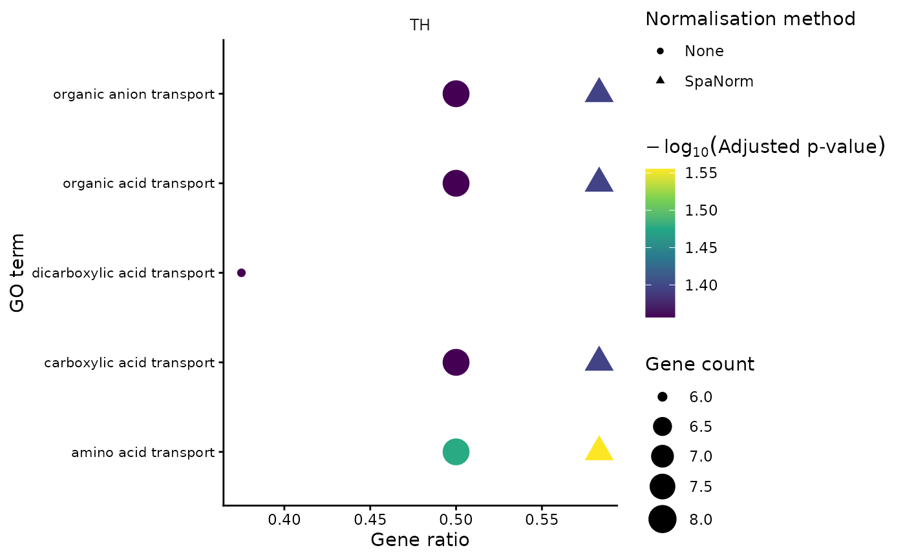

Plot enriched Gene Ontology terms across normalisation methods and spatial clusters.
Usage
plot_go(
go_result,
top_n = 5,
method_col = "method",
cluster_col = "cluster",
method_order = NULL,
point_size_range = c(2, 7),
theme_name = "classic",
methods = NULL,
title = NULL,
subtitle = NULL,
ncol = 3
)Arguments
- go_result
Output from calculate_go() or GO data frame.
- top_n
Number of top GO terms per method and cluster. If NULL, all available GO terms are displayed.
- method_col
Column containing normalisation methods.
- cluster_col
Column containing cluster assignments.
- method_order
Optional normalisation method order.
- point_size_range
Minimum and maximum point sizes.
- theme_name
Plot theme.
- methods
Optional methods to display.
- title
Optional plot title.
- subtitle
Optional plot subtitle.
- ncol
Number of facet columns.
Details
Point size represents gene count, colour represents enrichment significance, and shape represents the normalisation method.
Examples
data(norm_ccc_example)
go_result <- calculate_go(
norm_list = norm_ccc_example,
cluster_col = "layer_guess",
methods = names(norm_ccc_example),
assay_name = "logcounts",
OrgDb = org.Mm.eg.db::org.Mm.eg.db,
key_type = "SYMBOL",
ont = "BP",
fdr_cutoff = 0.05,
min_prop = 0.4,
min_spots = 10,
min_genes = 5,
pvalue_cutoff = 0.05,
qvalue_cutoff = 0.05,
p_adjust_method = "BH",
readable = TRUE,
test_type = "t"
)
#> 'select()' returned 1:1 mapping between keys and columns
#> 'select()' returned 1:1 mapping between keys and columns
#> 'select()' returned 1:1 mapping between keys and columns
#> 'select()' returned 1:1 mapping between keys and columns
#> 'select()' returned 1:1 mapping between keys and columns
#> 'select()' returned 1:1 mapping between keys and columns
#> 'select()' returned 1:1 mapping between keys and columns
#> 'select()' returned 1:1 mapping between keys and columns
#> 'select()' returned 1:1 mapping between keys and columns
#> 'select()' returned 1:1 mapping between keys and columns
#> 'select()' returned 1:1 mapping between keys and columns
#> 'select()' returned 1:1 mapping between keys and columns
#> 'select()' returned 1:1 mapping between keys and columns
#> 'select()' returned 1:1 mapping between keys and columns
#> 'select()' returned 1:1 mapping between keys and columns
#> 'select()' returned 1:1 mapping between keys and columns
#> 'select()' returned 1:1 mapping between keys and columns
#> 'select()' returned 1:1 mapping between keys and columns
#> 'select()' returned 1:1 mapping between keys and columns
#> 'select()' returned 1:1 mapping between keys and columns
#> 'select()' returned 1:1 mapping between keys and columns
#> 'select()' returned 1:1 mapping between keys and columns
#> 'select()' returned 1:1 mapping between keys and columns
#> 'select()' returned 1:1 mapping between keys and columns
#> 'select()' returned 1:1 mapping between keys and columns
#> 'select()' returned 1:1 mapping between keys and columns
#> 'select()' returned 1:1 mapping between keys and columns
#> 'select()' returned 1:1 mapping between keys and columns
#> 'select()' returned 1:1 mapping between keys and columns
#> 'select()' returned 1:1 mapping between keys and columns
#> 'select()' returned 1:1 mapping between keys and columns
#> 'select()' returned 1:1 mapping between keys and columns
#> 'select()' returned 1:1 mapping between keys and columns
#> 'select()' returned 1:1 mapping between keys and columns
p_go <- plot_go(
go_result = go_result,
top_n = 5,
method_col = "method",
cluster_col = "cluster",
point_size_range = c(2, 7),
theme_name = "classic",
ncol = 2
)
p_go$plot
